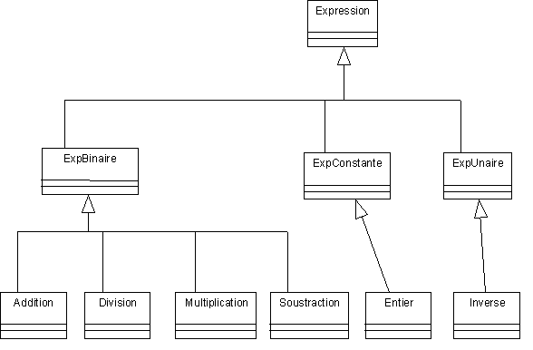

| Exercice n° 3: pour une
granularité plus fine (trop fine ?)
On a remarqué à l'exercice précédent que
l'écriture des méthodes pour les expressions composées
est encore complexe. Question 1 : Donner le nouveau schéma Uml et la nouvelle implantation avec le programme de test modifié.
En fait les expressions composées peuvent avoir des opérateurs
binaires mais aussi des opérateurs unaires (comme l'inversion ou -unaire)
et les Expressions simples sont en fait des expressions constantes qui peuvent
être autre chose que des nombres.  Question 2 : Donner la nouvelle implantation avec le programme de test modifié.
Question 3 : On a remarqué que l'affichage par la méthode
'toString()' ne convient que si l'écriture de l'expression ne demande
pas de parenthèses. Ajouter un affichage postfixe des expressions.
Le moins unaire sera noté _.
Question 4: Ajouter un affichage préfixe des expressions i.e.
l'écriture fonctionnelle. Remarque : --Méthode informelle d'introduction d'une nouvelle opération/action sur les Expressions--
/* des idées... Q1 , Q2 +Q3 |